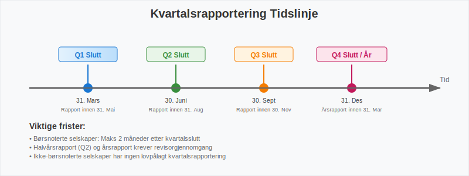
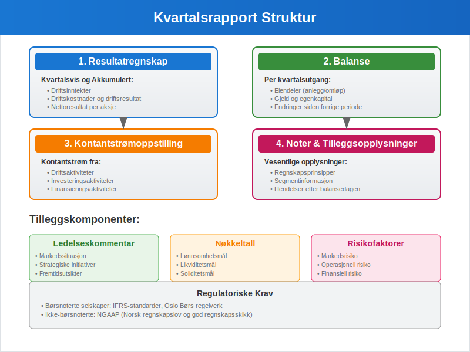
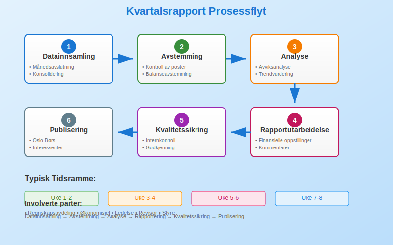
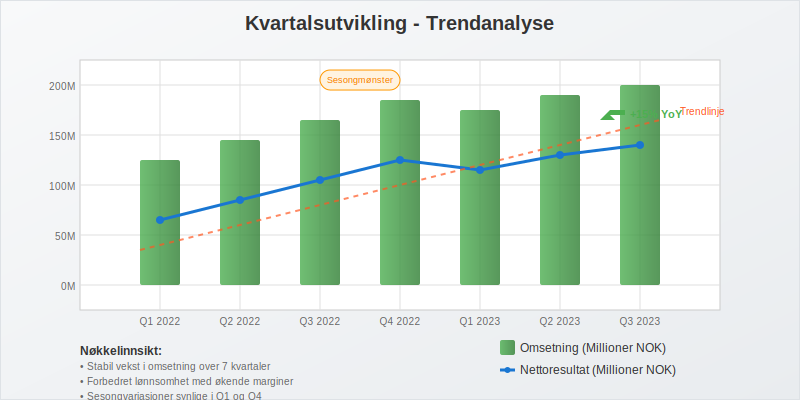
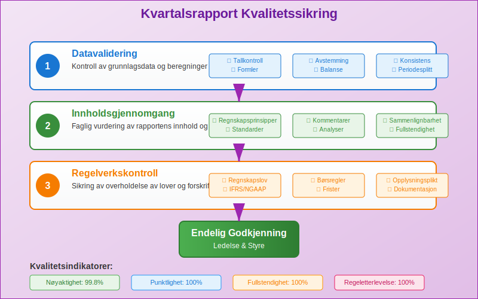
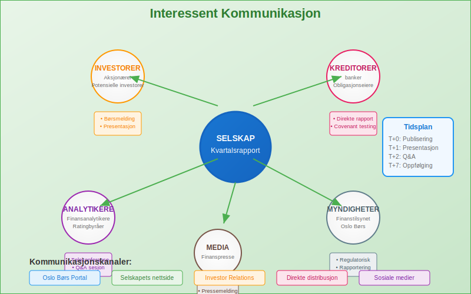

En kvartalsrapport er en finansiell rapport som selskaper utarbeider og publiserer hver tredje måned for å gi interessenter oppdatert informasjon om selskapets økonomiske utvikling og resultater. Kvartalsrapportering følger bedriftens terminer og er en sentral del av finansregnskapet som spiller en viktig rolle i å opprettholde transparens og tillit i finansmarkedene.
For å forstå kvartalsrapportens plass i det større regnskapsbildet, er det viktig å ha grunnleggende kunnskap om regnskap og hvordan bokføring danner grunnlaget for all finansiell rapportering.
Seksjon 1: Lovkrav og Regulatoriske Bestemmelser
1.1 Børsnoterte Selskaper
Børsnoterte selskaper i Norge har strenge rapporteringskrav som reguleres av Verdipapirhandelloven og Oslo Børs’ regelverk. Disse selskapene må publisere kvartalsrapporter innen to måneder etter kvartalets slutt.

Hovedkrav for børsnoterte selskaper:
- Kvartalsvis rapportering (Q1, Q2, Q3, Q4)
- Publisering på Oslo Børs’ rapporteringsportal
- Samtidig distribusjon til alle interessenter
- Overholdelse av IFRS standarder
- Revisorgjennomgang for halvårs- og årsrapporter
1.2 Ikke-børsnoterte Selskaper
Ikke-børsnoterte selskaper har færre rapporteringskrav, men mange velger likevel å utarbeide kvartalsrapporter for interne formål eller for å tilfredsstille krav fra långivere og investorer.
| Selskapstype | Kvartalsrapport Påkrevd | Rapporteringsstandard | Frist |
|---|---|---|---|
| Børsnoterte ASA | Ja | IFRS | 2 måneder |
| Store ikke-børsnoterte ASA | Nei (anbefalt) | NGAAP/IFRS | Ikke fastsatt |
| Mindre ASA | Nei | NGAAP | Ikke fastsatt |
| AS | Nei | NGAAP | Ikke fastsatt |
Seksjon 2: Innhold i Kvartalsrapporten
2.1 Kjernekomponenter
En kvartalsrapport inneholder typisk følgende hovedelementer som bygger på prinsippene fra balanseregnskap:

1. Resultatregnskap (Kvartalsvis og Akkumulert)
- Driftsinntekter for kvartalet
- Driftskostnader og driftsresultat
- Finansposter og skattekostnad
- Nettoresultat per aksje
2. Balanse (Kvartalsutgang)
- Eiendeler fordelt på anleggsmidler og omløpsmidler
- Gjeld og egenkapital
- Endringer siden forrige rapporteringsperiode
3. Kontantstrømoppstilling
- Kontantstrøm fra drift, investering og finansiering
- Endring i kontantbeholdning
2.2 Tilleggsopplysninger og Noter
Kvartalsrapporter må også inneholde vesentlige tilleggsopplysninger som gir kontekst til tallene:
- Regnskapsprinsipper og endringer
- Segmentinformasjon
- Hendelser etter balansedagen
- Usikkerhet og risikofaktorer
- Sammenlignbare tall fra tidligere perioder
Seksjon 3: Utarbeidelse og Prosess
3.1 Forberedelse og Planlegging
Utarbeidelse av kvartalsrapporter krever systematisk planlegging og koordinering mellom ulike avdelinger:

Hovedsteg i prosessen:
-
Månedsavslutning og Konsolidering
- Fullføring av bokføring for kvartalet
- Avstemming av alle hovedbokskontoer
- Konsolidering av datterselskaper
-
Analyse og Kvalitetssikring
- Sammenligning med budsjett og tidligere perioder
- Identifisering av avvik og forklaringer
- Gjennomgang av internkontroll
-
Rapportutarbeidelse
- Utarbeiding av finansielle oppstillinger
- Skriving av kommentarer og analyser
- Kvalitetssikring og godkjenning
3.2 Teknologi og Automatisering
Moderne kvartalsrapportering drar nytte av digitale løsninger og automatisering:
- ERP-systemer for integrert databehandling
- API-integrasjoner for automatisk dataoverføring
- Rapporteringsverktøy for effektiv presentasjon
Seksjon 4: Analyse og Bruk av Kvartalsrapporter
4.1 Nøkkeltall og Indikatorer
Kvartalsrapporter gir grunnlag for beregning av viktige finansielle nøkkeltall:
| Kategori | Nøkkeltall | Beregning | Formål |
|---|---|---|---|
| Lønnsomhet | Bruttofortjeneste | (Omsetning - Varekostnad) / Omsetning | Måle operasjonell effektivitet |
| Likviditet | Arbeidskapital | Omløpsmidler - Kortsiktig gjeld | Vurdere kortsiktig betalingsevne |
| Soliditet | Egenkapitalandel | Egenkapital / Total kapital | Måle finansiell stabilitet |
| Effektivitet | Kapitalrentabilitet | Nettoresultat / Gjennomsnittlig egenkapital | Vurdere avkastning til eiere |
4.2 Trendanalyse og Sammenligning

Viktige analyseområder:
- Sesongvariasjoner: Mange virksomheter har naturlige svingninger gjennom året
- Veksttrend: Sammenligning av samme kvartal i ulike år
- Marginsutvikling: Endringer i lønnsomhet over tid
- Kontantstrømsmønstre: Regularitet i kontantgenerering
Seksjon 5: Særlige Hensyn og Utfordringer
5.1 Estimater og Periodisering
Kvartalsrapportering innebærer ofte økt bruk av estimater sammenlignet med årsrapporter:
- Skattekostnader basert på forventet årsresultat
- Periodisering av sesongrelaterte kostnader
- Foreløpige verdivurderinger av eiendeler
5.2 Sammenlignbarhet og Konsistens
For å sikre sammenlignbare rapporter må selskaper:
- Anvende konsistente regnskapsprinsipper
- Justere for engangseffekter og ekstraordinære poster
- Gi tilstrekkelig informasjon om endringer

Seksjon 6: Digitalisering og Fremtidige Trender
6.1 Automatisering av Rapporteringsprosessen
Moderne teknologi transformerer kvartalsrapportering:
- Sanntidsrapportering: Kontinuerlig oppdatering av finansielle data
- Kunstig intelligens: Automatisk identifisering av avvik og trender
- Blockchain: Økt transparens og sporbarhet i finansiell rapportering
6.2 ESG-rapportering
Økende fokus på bærekraftsrapportering påvirker kvartalsrapporter:
- ESG-indikatorer integreres i finansiell rapportering
- CSRD-direktivet krever utvidet bærekraftsrapportering
- GHG-protokollen for klimarapportering
Seksjon 7: Praktiske Tips for Bedre Kvartalsrapportering
7.1 Forberedelse og Organisering
Beste praksis for effektiv kvartalsrapportering:
- Etabler faste rutiner og tidsplaner
- Involver alle relevante avdelinger tidlig i prosessen
- Dokumenter alle vesentlige forutsetninger og estimater
- Gjennomfør regelmessige kvalitetskontroller
7.2 Kommunikasjon med Interessenter
- Klarhet: Bruk enkelt og forståelig språk
- Transparens: Forklar vesentlige endringer og avvik
- Konsistens: Oppretthold samme struktur og format
- Aktualitet: Publiser innen fastsatte frister

Konklusjon
Kvartalsrapporter er et essensielt verktøy for finansiell kommunikasjon og styring. De gir interessenter regelmessig innsikt i selskapers utvikling og bidrar til økt transparens i finansmarkedene. For selskaper representerer kvartalsrapportering både en regulatorisk forpliktelse og en mulighet til å demonstrere verdiskapning og strategisk fremgang.
Effektiv kvartalsrapportering krever solid forståelse av regnskapsprinsipper, systematiske prosesser og god kommunikasjon. Med økende digitalisering og automatisering blir prosessen mer effektiv, samtidig som kravene til kvalitet og transparens fortsetter å øke.
For selskaper som ønsker å forbedre sin kvartalsrapportering, er det viktig å investere i riktige systemer, kompetanse og prosesser. Dette sikrer ikke bare overholdelse av regulatoriske krav, men bidrar også til bedre intern styring og økt tillit fra investorer og andre interessenter.